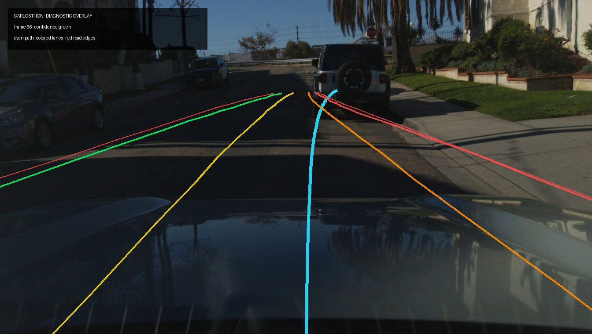

Carlosthon incident review
Local openpilot model/video artifact · recorded route · diagnostic overlay

Model overlay
Cyan:
modelV2 predicted path
Green:
lane line 0
Yellow:
lane line 1
Orange:
lane line 2
Red:
road edges / lane line 3
Lane probabilities are shown in the Evidence data; line colors identify source arrays, not confidence.